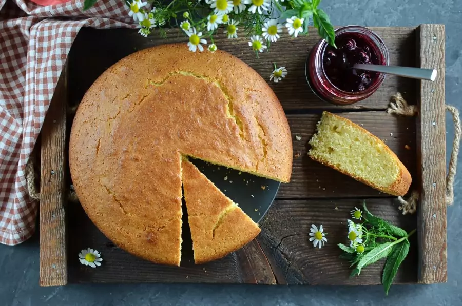

Golden Sweet Cornbread

Description:
This recepie requires takes a total of 35 mins to cook and can be done by almost anybody
Ingredients:
- 1 cup all-purpose flour
- 1 cup yellow cornmeal
- ⅔ cup white sugar
- 1 teaspoon salt
- 3 ½ teaspoons baking powder
- 1 egg
- 1 cup milk
- ⅓ cup vegetable oil
Steps:
- Preheat oven to 400 degrees F (200 degrees C). Spray or lightly grease a 9 inch round cake pan.
- In a large bowl, combine flour, cornmeal, sugar, salt and baking powder. Stir in egg, milk and vegetable oil until well combined. Pour batter into prepared pan.
- Bake in preheated oven for 20 to 25 minutes, or until a toothpick inserted into the center of the loaf comes out clean.